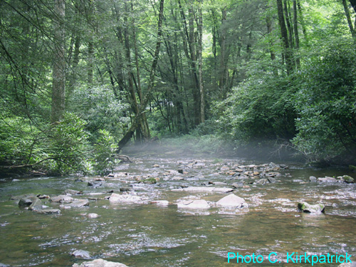
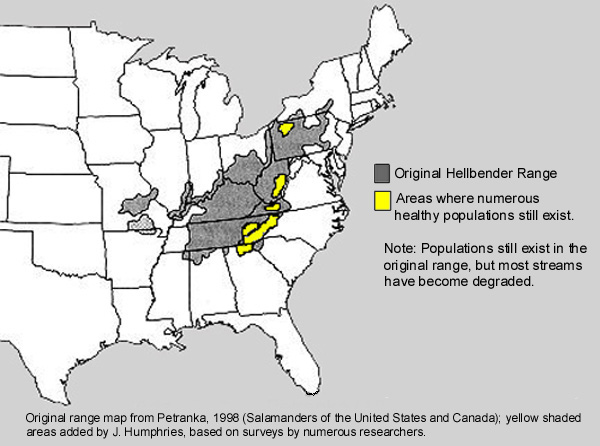

Hellbenders
|
HellbenderEastern Hellbender Family:Cryptobranchidae (giant salamanders) in the order Caudata Description:These large, aquatic salamanders have a wide, flat head with tiny eyes and a broad and vertically compressed, rudderlike tail. Their body and legs are covered with prominent folds of skin. Coloration is a combination of browns or grayish-browns with a varying number and size of dark blotches and a yellowish-brown belly. During breeding season (late summer and early autumn) they may have an overall reddish-brown color. Size:Length: 11–20 inches. Habitat and conservation:Hellbenders live in large permanent streams and rivers. Since the 1970s populations have declined drastically. Most are older adults. Some have limb deformities. The lack of young spells trouble for hellbenders, which are listed as rare, threatened or endangered most everywhere they are found. In 2011 the Ozark subspecies was listed as Endangered under the federal Endangered Species Act. Hellbenders need clean, clear and cool rivers to survive and should never be harmed or removed from the wild. Foods:Hellbenders eat a variety of aquatic prey, such as small fish and insects, but around 90 percent of their diet consists of crayfish. Despite numerous studies, fish eggs have ever been found in the stomach of a hellbender—they do not harm populations of game fish. Distribution in Missouri:Eastern hellbenders: Ozarks, in rivers feeding the Missouri and Meramec drainages. Ozark subspecies: south-central Missouri. Status:Both subspecies are listed as State Endangered in Missouri; they may become extinct in our state in less than 20 years. None can be taken from the wild for any use. The Ozark hellbender subspecies has been listed as Endangered by the U.S. Fish and Wildlife Service. It occurs only in the White River system in southern Missouri and northern Arkansas. Its population has decreased about 75 percent since the 1980s due to habitat loss, lowered water quality, illegal collection and disease. Life cycle:These fully aquatic salamanders take in oxygen through their skin. By day they hide under large flat rocks; by night, they walk slowly along the stream bottom, hunting. Breeding takes place in late summer and early autumn. Females may not breed until they are 7–8 years old and may only breed every 2–3 years. Fertilization is external; 200–700 eggs can be produced; the males guard the eggs. Under natural conditions, hellbenders can live 30–35 years; one specimen reached age 55. Human connections:Hellbenders are a major indicator of the overall health of a river or stream; if there is something in the water that is causing their decline, it can affect other species, including us, as well. Ecosystem connections:Hellbenders are part of a healthy, natural aquatic environment and play an important role in maintaining crayfish populations. They’ve been on our continent for more than 6 million years and are a unique part of our wildlife heritage. |